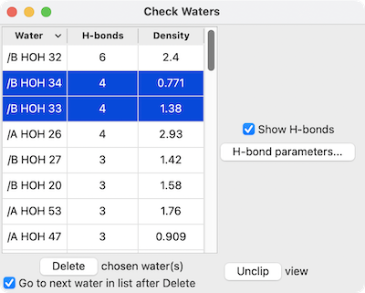

Check Waters lists the waters in an atomic structure and allows inspecting them individually for H-bonds and visual agreement with a corresponding density map (if any) opened separately and shown with Volume Viewer. See also: Rotamers, Add Hydrogens, Altloc Explorer, Renumber Residues, Change Chain IDs, H-Bonds, view, clip
Check Waters can be started from the Structure Analysis section of the Tools menu and manipulated like other panels (more...).
The initial dialog contains a menu of the current atomic models. Designating the model of interest and clicking Apply (to keep that dialog up) or OK (to dismiss it) will open another panel with a list of the waters in the structure.
|  |
For each water, the list gives the number of H-bonds, and if a corresponding density map was open before Check Waters was started, the Density at atom positions summed over the atoms in the residue: usually just one oxygen, but including hydrogens if present. The list can be sorted on any column by clicking the column heading.
One or more waters can be chosen from the list by clicking and dragging with the left mouse button; Ctrl-click (or command-click if using a Mac) toggles whether a water is chosen. Choosing waters in the list automatically selects them and focuses the view on their near vicinities (atoms within 4Å), slicing the structure by placing near/far clipping planes.
H-bonds are displayed as pseudobonds unless Show H-bonds is turned off (initial default on). Clicking H-bond parameters opens a separate dialog with several of the calculation options that also appear in the H-Bonds tool; clicking Apply recalculates the H-bonds accordingly.
{kind=link}